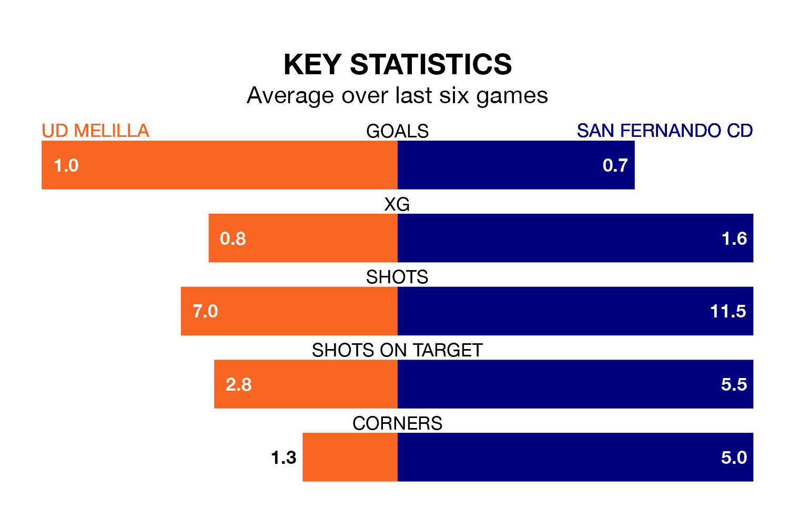

Sunday's early match at the Estadio Álvarez Claro sees two relegation candidates play each other, as 18th-ranked UD Melilla host 17th-placed San Fernando CD.
Melilla have picked up 27 points from their first 27 Primera Division RFEF Group 2 games, with seven wins and six draws.
That is eight points less than San Fernando CD have collected, having won nine and drawn eight.
In the last 10 years, Melilla and San Fernando CD have played each other on seven occasions. Melilla won four of them, San Fernando CD one, and they drew twice.
On average, Melilla scored 1.3 goals and San Fernando CD 0.7 in those matches.
Their last meeting was on November 26, when San Fernando CD won 4-1 at home.
Melilla are in disappointing form in Primera Division RFEF Group 2, with one win and two draws from their last six games.
And also with a win and two draws over that period, San Fernando CD's form is identical – they have both taken five points from 18.
With 23 goals in 34 games so far this season, the hosts are the league's second-lowest scorers with 0.7 goals per game. And they are conceding more than average, letting in 49 goals at a rate of 1.4 per game.
The away team are also below average scorers, with 0.9 goals per game, compared to a league average of 1.1. They have conceded 1.3 goals per game.
In Daniel Aquino Pintos, San Fernando CD have one of the league's most on-form strikers so far this season. He has notched seven goals in 22 appearances, to sit sixth in the scoring charts.
His goal rate of one every 256 minutes is quicker than that of Daniel García Beltrán, Melilla's top scorer with a goal every 332 minutes, and a total of five goals in 22 games.
Melilla's last match was on April 28, a 1-0 loss against CD Castellón.
San Fernando CD lost 3-1 against Real Madrid B last time out, on April 27.
Updated: 10:44 (UTC), 30/04/24